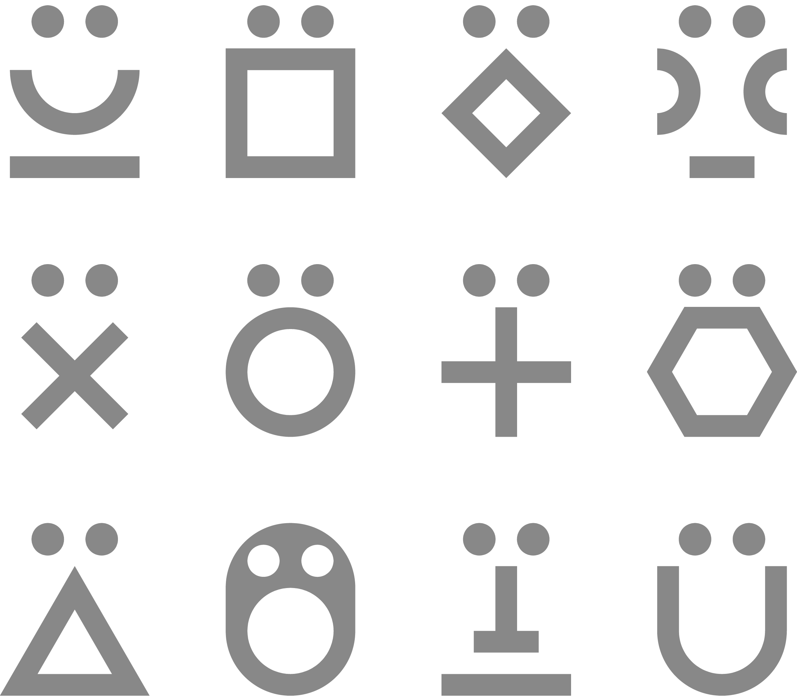

+355 68 908 6047
Dritan KAPO, Co-Founder Creative Director
+355 67 277 9119
Azmi STRINGA, Co-Founder Operations & Finance Director
Dritan Kapo është arkitekt dhe lektor pranë FAU, në Universitetin Politeknik të Tiranës. Ai diplomohet me Master Shkencor në Arkitekturë... pranë Universitetit të Firences dhe prej më shumë se një dekade ushtron profesionin në projektimin dhe zbatimin arkitektonik. Ekspertiza e tij profesionale përqëndrohet në strukturat e banimit, dëfrimit dhe ato të mikpritjes, nëpërmjet projekteve që promovimojnë aspektet identitare dhe trashëgiminë kulturore-natyrore. Hulumtimi i tij akademik përqëndrohet në zhvillimin e qëndrueshëm urban-rural, adaptimin arkitektonik, projektimin dhe teknologjinë arkitekturore. Read more
Amushi duhet ta beje sa me shpejt short bion.Amushi duhet ta beje sa me shpejt short bion.Amushi duhet ta beje sa me shpejt short ... bion.Amushi duhet ta beje sa me shpejt short bion.Amushi duhet ta beje sa me shpejt short bion.Amushi duhet ta beje sa me shpejt short bion.Amushi duhet ta beje sa me shpejt short bion.Amushi duhet ta beje sa me shpejt short bion.Amushi duhet ta beje sa me shpejt short bion.Amushi duhet ta beje sa me shpejt short bion.Amushi duhet ta beje sa me shpejt short bion.Amushi duhet ta beje sa me shpejt short bion.Amushi duhet ta beje sa me shpejt short bion.Amushi duhet ta beje sa me shpejt short bion. Read more
Partnerët tanë
Për të maksimizuar vlerën e projekteve zhvillimore dhe përmbushur me sukses angazhimet tona ndaj klientëve, Arka mbështetet në një rrjet të gjerë partnerësh të jashtëm. Këta profesionistë dhe kërkues shkencorë kanë ekspertizë në aspekte të rëndësishme për suksesin e projekteve zhvillimore si: politika sociale, dizajn, arkitekturë dhe projektim urban, transport të qëndrueshëm, aspekte ligjore dhe rregullatore, vlerësime tregu dhe pronash të paluajtshme, mirëqenie komunitare, planifikim urban dhe mjedisor, dhe projekte kulturore e artistike.
Arka gjithashtu bashkëpunon me organizata private dhe publike për të adresuar më mirë sfidat e sektorit dhe kërkesat e klientëve, vecanërisht aspekte si: nxitja e marrëdhënieve të shëndetshme njerëzore, promovimi i burimeve vendase, mbrojtja e trashëgimisë kulturore dhe asaj mjedisore.
Nëse dëshironi të beheni pjesë e familjes së Arkës, ju lutemi të dërgoni aplikimin, CV, dhe portfolin tuaj në adresën tonë të kontaktit info@arka.com.al
Arka ka bërë bashkë një grup profesionistësh me ekspertizë shumë disiplinore në shërbim të klientëve dhe projekteve zhvillimore.